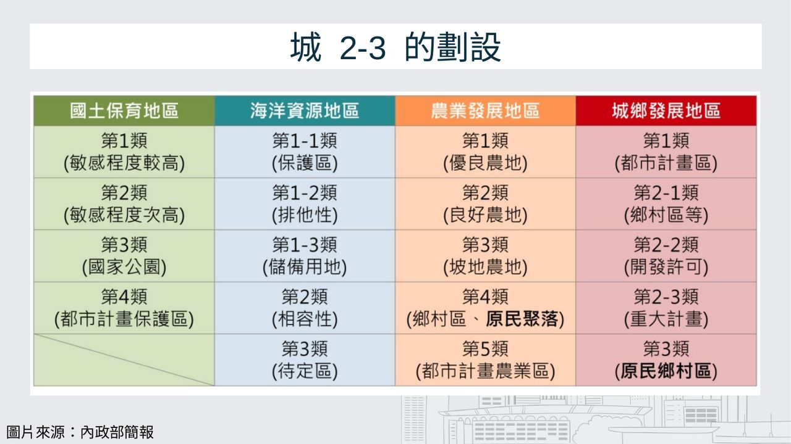
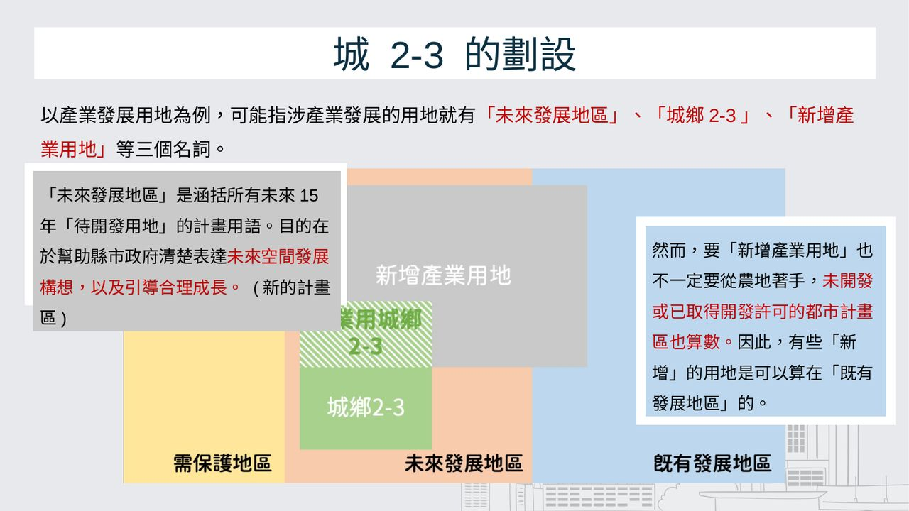
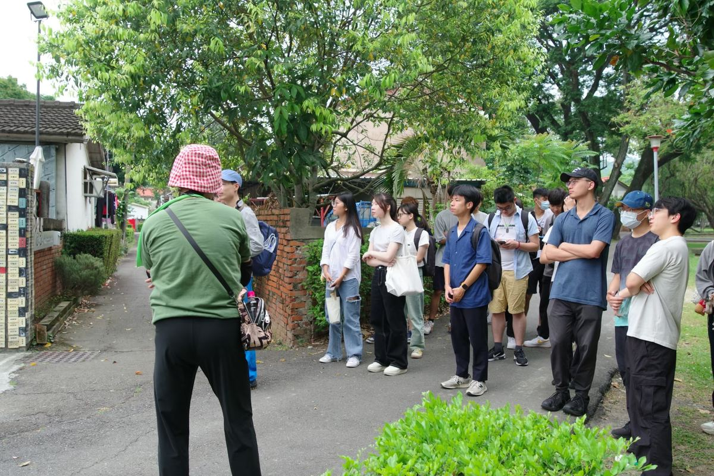
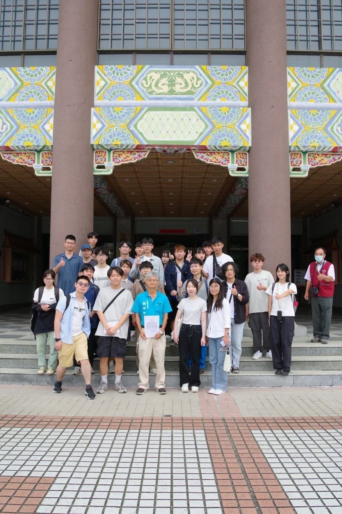

城 2-3 是什麼
城 2-3 可能來自新訂或擴大都市計畫、新增產業園區、特定工廠輔導納管，或擴大鄉村區；伴隨而來的課題，則是失去優良農地、當地產業結構轉變與農地生態受到破壞。
從個案變更到定期通檢
區域計畫時代可以透過開發許可個案變更；國土計畫公告後，被劃為農業發展地區的農地，縣市政府不能再隨時個案變更，只能在全國每十年、縣市每五年的通盤檢討時調整。
未來發展地區
涵括未來 15 年所有「待開發用地」的計畫用語，與「既有發展地區」「需保護地區」相對。一塊土地不是已經開發，就是不能開發，或將被開發。
新增產業用地不一定要用農地
未開發或已取得開發許可的都市計畫區也算數，所以有些「新增」的產業用地，其實可以算在既有發展地區裡。


推遲實施的風險
各縣市無法如期完成國土計畫的理由，包括各目的事業主管機關的圖資未即時更新、精準度不足，以及民眾對功能分區劃設結果與未來管制的不滿。簡報引用的觀點認為，推遲實施國土計畫，可能成為投機者急於實現土地利益的空窗期。
三個案例：劃設與徵收的衝突
苗栗大埔
竹科竹南基地暨周邊地區特定區計畫約 154 公頃、區段徵收約 136 公頃，多數是大埔的農田。2010 年警力進入農地引發抗爭，「原地原屋」的訴求與後續拆屋爭議，帶動《土地徵收條例》應納入公益性、必要性評估與聽證程序的討論。簡報也引用資料指出，原竹南園區廠房閒置率約 42%、銅鑼園區約 84%。
龍潭園區三期
規劃導入半導體先進製程、預估年產值 6,000 億元。範圍 158.59 公頃中 78.65% 是農牧用地、私有地佔 87.61%，影響 3,000 多位居民。徵收範圍後來排除南側密集住宅區，由 162 戶減為 77 戶，卻也引發居民之間的對立。
嘉義科學園區
由南科管理局主管，重點發展精準健康、智慧載具、智慧農業與新興科技產業，預計提供超過 5,000 個就業機會、產值約 380 億元；園區範圍目前大部分是農業發展地區第一類。
土地徵收必須同時符合合法性、公益性、必要性、比例性、最後手段與完全補償六大要件。
在區域計畫的時代，開發許可似乎成為一條捷徑；城 2-3 的劃設成了投資者的標的。政府、投資者與土地所有權人之間，如何讓各類土地均衡發展，會是國土計畫面臨的一大挑戰。
中興新村與中興交流道
4 月的議題工作坊先從《國土計畫法》以因應氣候變遷為立法目的談起，討論城 2-3 的調適課題。5 月以「擴大城鄉 願景之地」為題走讀中興新村，這座以田園都市精神規劃的新市鎮；在地居民談城 2-3 中興交流道附近地區計畫帶來的衝擊，內興里長也分享了中興新村與大學城的未來。


中興大學南投分部也報導了這次走讀：歡迎「城市行聊．走讀城鄉．讀書會」蒞臨興大南投
第二屆最後一場工作坊，以中興交流道附近地區先期規劃及新訂都市計畫案為題，各組拿到一張航照圖，參考走讀經驗在圖上標記：當地可能面臨什麼衝擊？可以用什麼手段解決？
延伸：東海別墅的人本交通工作坊
第四屆與下一代人本交通促進會、東海大學台灣文化研究社合辦「人本交通議題工作坊」，把城 2-3 的問題帶到每天都在走的街道上。東海別墅與對面的藝術街只隔一條臺灣大道，發展卻截然不同：
東海別墅：非都市土地上的大學城
1974 年建商趕在臺中港特定區計畫完成前，興建兩層樓的「東海花園別墅」；東海大學擴大招生、取消住校制後，別墅區逐漸變成學生生活聚落。因為位在非都市土地，沒有路網規劃、公共設施與使用管制，也無法辦理都市更新，道路窄小、違建與占用處處可見。1995 年的大肚鄉街計畫曾因地方強烈反對而取消，現在國土計畫把新庄子、蔗廍地區指認為城 2-1 與城 2-3，以新訂都市計畫推動，仍在先期規劃。
東海藝術街：在都市計畫區內
早期同樣因公共設施不足、住屋率僅約三成而停滯；1987 年「理想國」社區更新後，1990 年代形成咖啡館與藝文店聚集的藝術街坊。2014 年中科特定區計畫將商圈納入，道路、排水、公共設施與防災規劃都能起到作用；近年則由社區推動商圈再生。
工作坊接著談都市計畫中的道路層級與橫斷面設計（先滿足行人與自行車，再配置車道與功能車道，剩餘空間回歸人行）、道路服務水準，以及逢甲西安街、三峽北大特區等路網規劃不當的例子；再介紹彰師大進德路的標線改造等戰術城市主義做法，以及斗六、屏東、臺北師大路與忠孝東路，和韓國、美國、南非、柏林的人本道路案例，最後讓大家動手改造東海別墅的街道。
本主題活動4 場
2024.04.25
工作坊議題討論工作坊：氣候變遷與城 2-3
國土計畫法以因應氣候變遷為立法目的，討論城鄉發展地區第二類之三的調適課題，為中興新村走讀暖身。
2024.05.19
2024.06.14
工作坊議題討論工作坊：城鄉發展地區第二類之三（第二屆最後一場）
從苗栗大埔、龍潭園區三期與嘉義科學園區的案例看城 2-3 劃設的衝突，再拿航照圖分組討論中興交流道附近地區的先期規劃與新訂都市計畫。
2025.12.03
工作坊人本交通議題工作坊：都市計畫與道路設計
與下一代人本交通促進會、東海大學台灣文化研究社合辦，從東海別墅的發展史談到道路設計與標線改造。